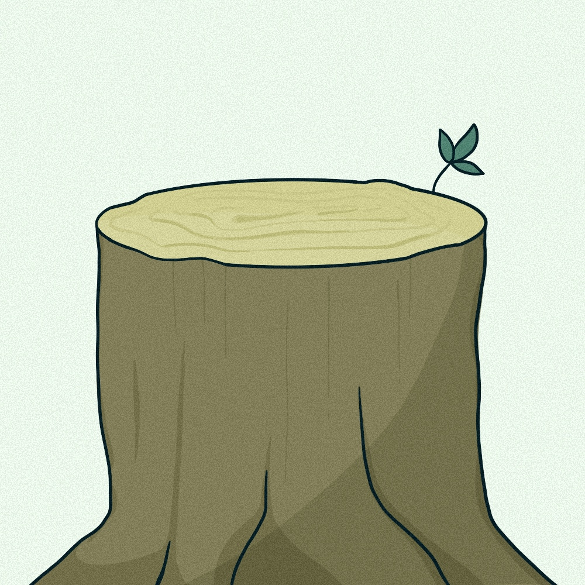
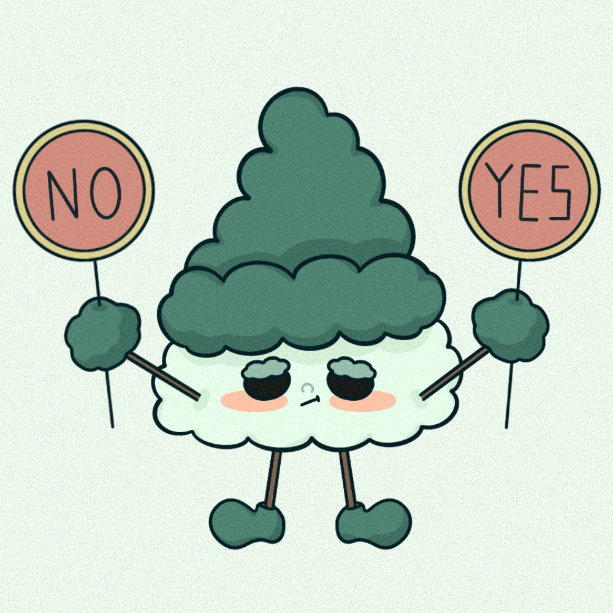
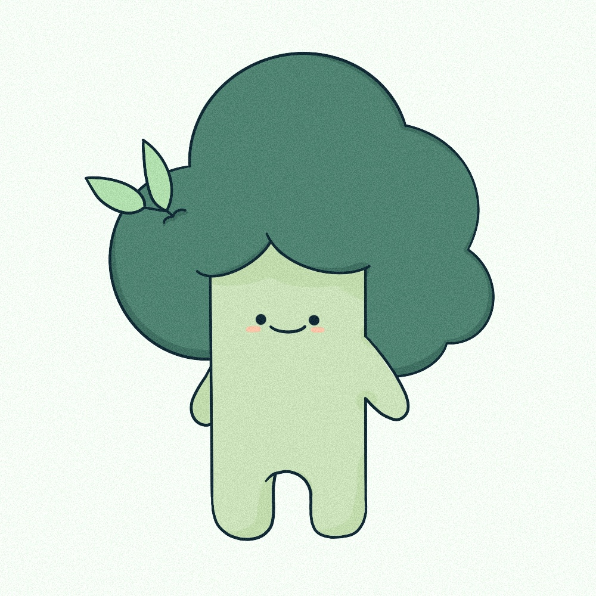
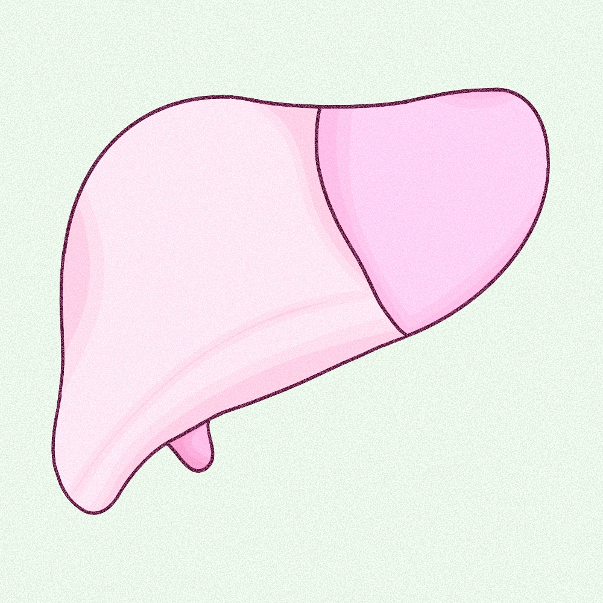
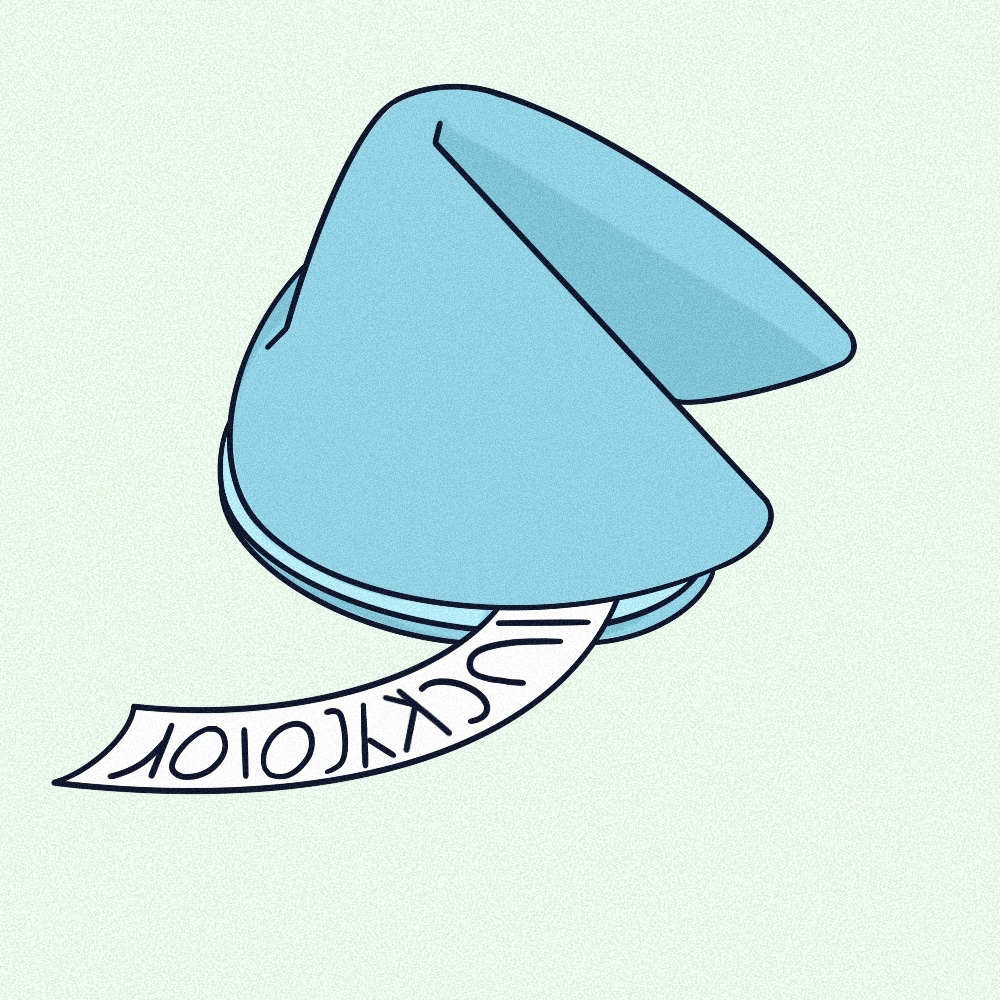
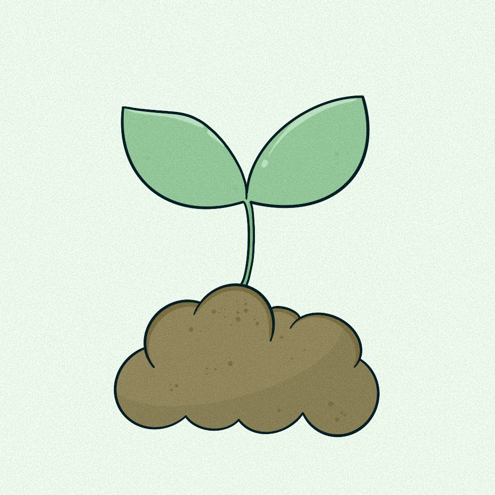
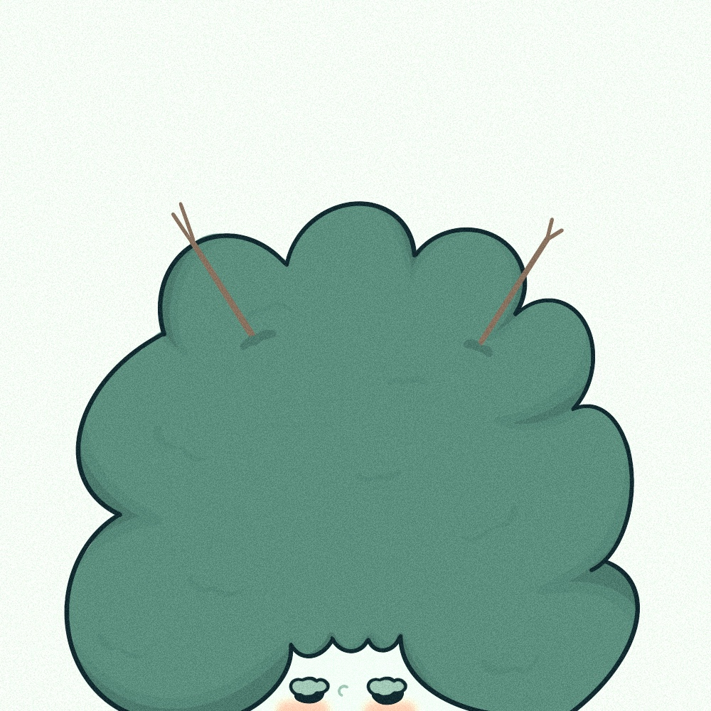

목의 오행

대표 재질 : 나무와 관련된 자연적인 소재

tree is free
자유로운 영혼
자유로운 영혼

솔직하며 직설적이다.

목은 금 오행을 무서워하고 화 오행을 좋아한다
: 도끼가 나무를 베고, 나무가 불의 활력소인 것을 연상
: 도끼가 나무를 베고, 나무가 불의 활력소인 것을 연상

브로콜리와 녹차가 간에 좋은 이유가
푸른 색과 목의 에너지의 연결성 때문이다.
: 푸른 음식은 간에 좋다.
푸른 색과 목의 에너지의 연결성 때문이다.
: 푸른 음식은 간에 좋다.

내장 기관 : 간
간 질환을 조심해야 한다.
간 질환을 조심해야 한다.

지속적으로 성장하며 발전하는 특성을 갖고 있다.
안정성과 균형
: 안정적인 성격을 갖추고,
감정과 이성을 균형있게 조절할 수 있다.
: 안정적인 성격을 갖추고,
감정과 이성을 균형있게 조절할 수 있다.
나무가 자라는 에너지는 아이를 키워내는 에너지로
교육에 종사하는 사람이 많다.
교육에 종사하는 사람이 많다.

대표 색 : 푸른색
목이 많은 사람은 푸른색을 피해라.
목이 많은 사람은 푸른색을 피해라.

추진력과 리더십이 강하다.
: 반면 목이 없는 사람은 무엇을 시작하는 힘이 약하다.
: 반면 목이 없는 사람은 무엇을 시작하는 힘이 약하다.

봄의 새싹 : 단단한 대지를 뚫고 나온 아주 강한 힘을 지녔다.

나무의 원소